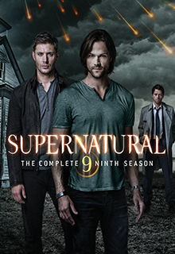

Сверхъестественное Сезон 9



Страна: США
Телеканал: The WB, The CW
Жанр: Сериал / Детектив / Триллер / Ужасы / Фэнтези
Возрастное ограничение: 16+
Перевод: Профессиональный (закадровый)
Дубляж: (LostFilm)
Количество серий: 23
Продолжительность: 43 мин
Режиссер: Роберт Сингер, Филип Сгриккиа, Джон Шоуолтер
Актеры: Джаред Падалеки, Дженсен Эклс, Миша Коллинз, Марк Шеппард, Джим Бивер, Рут Коннелл, Саманта Смит, Марк Пеллегрино, Осрик Чау, Кертис Армстронг
В девятом сезоне "Сверхъестественное" Винчестеры разработали план запечатывания адских врат, но он оказался под угрозой. Теперь они желают излечить Кроули от его демонической сущности. Но когда Дин узнал, что это будет стоить жизни его брату – им пришлось отказаться и от этой затеи. За этими заботами герои пропустили важное событие – Метатрон явился на небеса, и изгнал всех обитавших там ангелов на землю. Теперь они, лишившиеся своих способностей, скитаются по земле, пытаясь вернуться домой. Кастиэль, потерявший крылья вместе со своими собратьями, утратил еще и свою благодать, и теперь он – обычный смертный человек, который пытается адаптироваться в новой для себя роли.